GPT Adventures — Part 4: Distribute It
In this part, I will explore the various methods of, and factors influencing, distributed training. Things I would like to understand more include exploring how training speed depends on:
- Distributed training modalities (Distributed Data Parallel, Fully Distributed Data Parallel, Tensor Parallelism and Pipeline Parallelism) and their limitations
- The effect of accelerator interconnect bandwidth (PCIe vs NVSwitch)
- Number of accelerators
And, of course, the interdependencies between those factors.
Training Loop Refactor
We have to refactor the training loop in order to make it compatible with distributed training. Rather than a single for loop inside the script’s main method, main is now only used to configure and spawn the distributed process group. Each rank executes a training loop analogous to the original, single-device loop, with each rank allocated an equal, disjoint shard of the training set data. In our case, we shard the data using PyTorch’s DistributedSampler.
Per-device batch size is also adjusted to keep the same overall batch size; this means that the amount of per-forward/backward-pass compute is reduced, which reduces the amount of compute that can be overlapped with comms as the number of devices increases. Depending on the distributed training scheme and the topology of our compute resource, the overall comms latency can increase, creating a double-whammy of sorts; we’ll need to keep a close eye on this to ensure we are not limited by our comms bandwidth.
Distributed Data Parallel
Let us start with the conceptually simplest of frameworks. In DDP, we simply fully replicate the model on each of the N accelerators, and have every accelerator process a different part of the overall batch. Once all machines have finished processing and have produced gradients for their shard of the batch, we synchronise the gradients by performing an AllReduce.
Note that there actually are many smaller AllReduces. When running experiments, it struck me that in the initial implementation I never had to specify how to partition the gradient communications; clearly, the NCCL backend did it for me, but it was not entirely clear how I ended up with the number of AllReduce calls I did.
It turns out that NCCL performs something called gradient bucketing. During the backward pass, it accumulates the gradient artifacts as they become available into a flat buffer. Once the size of that buffer is exceeded, an AllReduce fires and gradients are synchronised; the default bucket size is 25MB. Below we can observe the effect of varying the bucket size. While medium and large buckets perform similarly, if the bucket size becomes too small, the overhead of launching kernels dominates — using 1MB buckets was considerably slower. Note also that when the parameters of a single, particularly large weights matrix can exceed the capacity of a bucket on a single increment — hence even in the small bucket example some of the AllReduces are larger and take longer to complete. In particular, the first and last buckets correspond to the embedding/unembedding matrices, and these immediately fill the bucket for all three sizes tested.
(Note: the bottom row is a separate CUDA stream, and this is where we can see the collective operations being overlapped with the backward pass compute.)
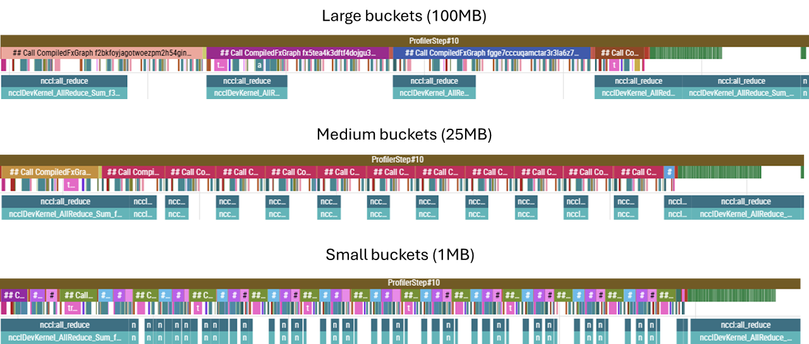
This flexibility in how we synchronise gradients stems from the fact that, in DDP, while gradients must be fully in sync before we can perform the optimiser step, the gradient tensors themselves are not on the critical path — meaning that they are not inputs into any of the subsequent backward pass computations; they are independent end-products in their own right. This (and many other concepts) is excellently laid out in Part 5 of The Scaling Book.
Interconnects — PCIe, DCI and Host Bridges
All other things being equal, the duration of an AllReduce should be inversely proportional to the bandwidth of the interconnect over which it is being performed. To see how well this holds, we can experiment with different types of interconnects. For example, one of the GPU slices I have access to is an 8×A100 slice, composed of two subgroups of 4 GPUs each. Within each subgroup, each GPU is connected to a CPU host via PCIe, but GPUs from different subgroups can only communicate over a (much slower) DCI connection between the CPU hosts, as shown below.
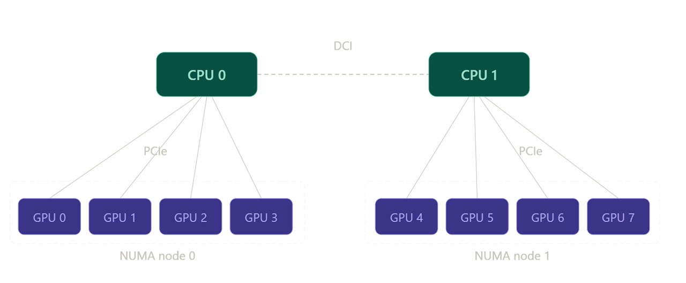
Therefore, a distributed training run on two GPUs within the same subgroup should be faster (owing to the decreased AllReduce durations) than an equivalent run performed on two GPUs from disparate subgroups (which requires data to egress the node and traverse the DCI host-to-host bridge).
We can test this by profiling a training run as usual. But we can also get a quicker, cleaner, lower-level insight into how the latency of the collectives themselves is affected by the networking configuration. NCCL comes with a suite of utilities for testing collective op latencies. One of these tools is:
all_reduce_perf -b 1M -e 1G -f 2 -g 2where -b and -e set the size of the test data packet being AllReduced, -f sets the increment factor between packets, and -g sets the number of GPUs to use in the test (i.e. here we are using packets of size between 1MB and 1GB, doubling the message size between iterations, and the communication is between two GPUs).
First, we run nvidia-smi topo -m to verify which devices are PCIe connected (NODE) and which are only connected via the host (SYS):
| GPU0 | GPU1 | GPU2 | GPU3 | GPU4 | GPU5 | GPU6 | GPU7 | NIC0 | NIC1 | |
|---|---|---|---|---|---|---|---|---|---|---|
| GPU0 | — | NODE | NODE | NODE | SYS | SYS | SYS | SYS | SYS | SYS |
| GPU1 | NODE | — | NODE | NODE | SYS | SYS | SYS | SYS | SYS | SYS |
| GPU2 | NODE | NODE | — | NODE | SYS | SYS | SYS | SYS | SYS | SYS |
| GPU3 | NODE | NODE | NODE | — | SYS | SYS | SYS | SYS | SYS | SYS |
| GPU4 | SYS | SYS | SYS | SYS | — | NODE | NODE | NODE | NODE | NODE |
| GPU5 | SYS | SYS | SYS | SYS | NODE | — | NODE | NODE | NODE | NODE |
| GPU6 | SYS | SYS | SYS | SYS | NODE | NODE | — | NODE | PHB | PHB |
| GPU7 | SYS | SYS | SYS | SYS | NODE | NODE | NODE | — | NODE | NODE |
Note how the block matrix reflects the configuration shown in the diagram above.
GPUs 0–1 (PCIe-connected):
| Size (B) | Count | Time OOP (µs) | AlgBW OOP (GB/s) | BusBW OOP (GB/s) | Time IP (µs) | AlgBW IP (GB/s) | BusBW IP (GB/s) |
|---|---|---|---|---|---|---|---|
| 8,388,608 | 2,097,152 | 580.2 | 14.46 | 14.46 | 632.5 | 13.26 | 13.26 |
| 16,777,216 | 4,194,304 | 947.6 | 17.71 | 17.71 | 926.0 | 18.12 | 18.12 |
| 33,554,432 | 8,388,608 | 1798.5 | 18.66 | 18.66 | 1802.0 | 18.62 | 18.62 |
| 67,108,864 | 16,777,216 | 3528.4 | 19.02 | 19.02 | 3520.6 | 19.06 | 19.06 |
| 134,217,728 | 33,554,432 | 6924.6 | 19.38 | 19.38 | 6914.9 | 19.41 | 19.41 |
| 268,435,456 | 67,108,864 | 13,698 | 19.60 | 19.60 | 13,699 | 19.59 | 19.59 |
| 536,870,912 | 134,217,728 | 27,104 | 19.81 | 19.81 | 27,090 | 19.82 | 19.82 |
| 1,073,741,824 | 268,435,456 | 53,866 | 19.93 | 19.93 | 54,288 | 19.78 | 19.78 |
Avg bus bandwidth: 18.51 GB/s
GPUs 3–7 (host bridge / DCI-connected):
| Size (B) | Count | Time OOP (µs) | AlgBW OOP (GB/s) | BusBW OOP (GB/s) | Time IP (µs) | AlgBW IP (GB/s) | BusBW IP (GB/s) |
|---|---|---|---|---|---|---|---|
| 8,388,608 | 2,097,152 | 679.7 | 12.34 | 12.34 | 643.6 | 13.03 | 13.03 |
| 16,777,216 | 4,194,304 | 1274.7 | 13.16 | 13.16 | 1250.0 | 13.42 | 13.42 |
| 33,554,432 | 8,388,608 | 2466.6 | 13.60 | 13.60 | 2482.7 | 13.52 | 13.52 |
| 67,108,864 | 16,777,216 | 4928.8 | 13.62 | 13.62 | 4898.2 | 13.70 | 13.70 |
| 134,217,728 | 33,554,432 | 9763.1 | 13.75 | 13.75 | 9762.8 | 13.75 | 13.75 |
| 268,435,456 | 67,108,864 | 19,506 | 13.76 | 13.76 | 19,517 | 13.75 | 13.75 |
| 536,870,912 | 134,217,728 | 38,960 | 13.78 | 13.78 | 38,888 | 13.81 | 13.81 |
| 1,073,741,824 | 268,435,456 | 77,783 | 13.80 | 13.80 | 77,824 | 13.80 | 13.80 |
Avg bus bandwidth: 13.54 GB/s
We will try to unpick the exact bandwidth numbers later, but for now we just note that communicating over the host bridge is slower. This confirms that we should expect the AllReduces to take longer on the latter device pair. Given that the AllReduce operations on the PCIe-connected pair are already nearly densely packed (see below), we expect the AllReduce ops to start increasing the overall latency.
Even though, as previously mentioned, AllReduces are not on the critical path of the backward pass itself, they must finish before the optimiser step can be taken. While even in the PCIe case the final AllReduce can only start after the backward pass propagates all the way through the final embedding layer, and therefore extends beyond (i.e. is not overlapped with) backward compute, if many AllReduces are queued up and haven’t finished by the time the embedding backward finishes, the final AllReduce may not even start for a while after. This is exactly the pattern seen in the traces below.
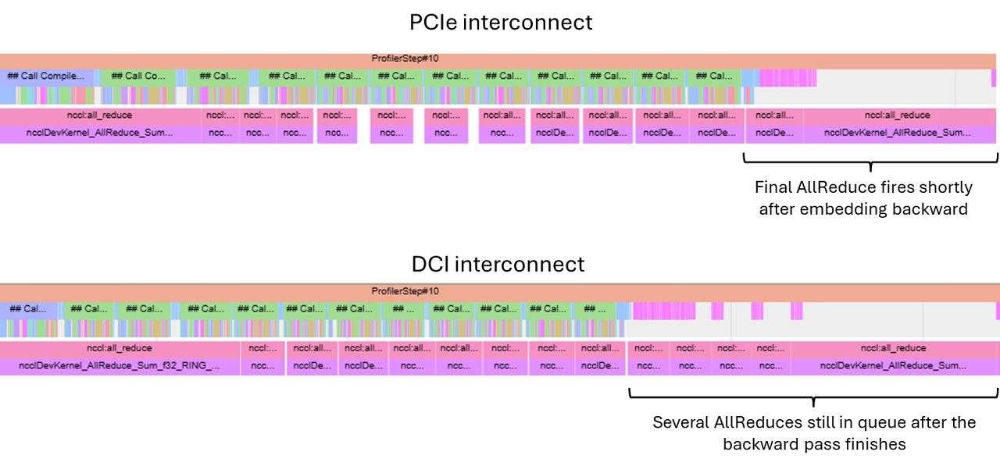
Even though the final AllReduce will necessarily introduce a gap between the end of the backward pass and the optimiser step, for the PCIe case in the example above this is relatively minor and more than made up for by the fact that our compute-limited training loop now does ~half the work per device, leading to a nearly 2× speed-up.
However, as the number of GPUs increases, the PCIe connection quickly becomes inadequate.
Increasing the Number of Devices
As the number of GPUs involved in computation increases, the size of the gradients being transferred also goes up; each gradient shard is \(\frac{2}{N}S\) bytes, and \(N-1\) shards (all but the one already present on the device) need to be communicated to each device. Evaluating the ratio of total comms size for \(N=2\) and \(N=4\), we get a factor of 1.5.
Moreover, since the host-mediated communication does not allow different pairs of devices to communicate in parallel at full interconnect bandwidth each — while in two-device DDP two comms streams shared the bus, in a four-device DDP this bus now serves all four streams — so each communication stream gets half as much bandwidth allocated. This means we’d expect the AllReduce latency to increase by at least 3× for the four-device configuration.
In reality, we see closer to 5× — likely due to imperfect bandwidth contention handling in the shared bus.
The amount of backward pass compute is also less when the same effective batch is shared between four devices, leading to a prolonged stall waiting for the NCCL collectives to complete. Overall, this leads to a significant decrease in training speed; increasing the number of devices is actually counterproductive.
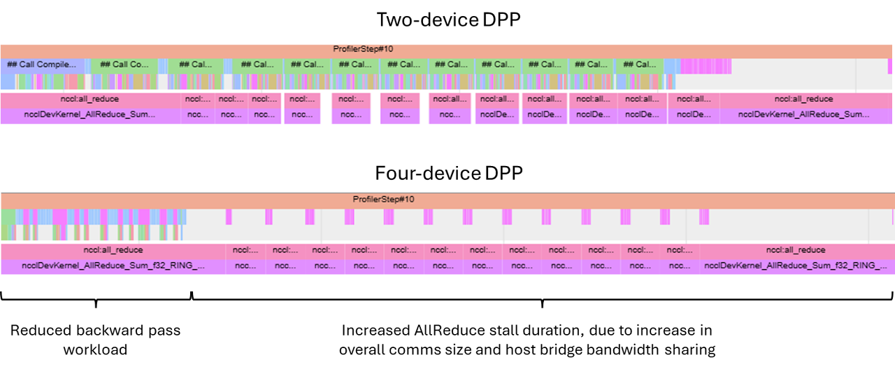
NVLinks and NVSwitches
Let us now consider a different setup, where the layout of host-device networking is unchanged, but devices are additionally networked with NVLink interconnect via a NVSwitch box, as shown below.
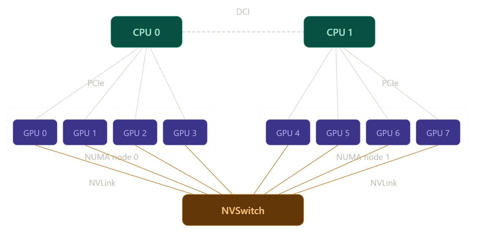
In the NVSwitch setup, each link has a much higher bandwidth (nearly 10×), and the NVSwitch itself is a dedicated piece of networking hardware, which allows for non-blocking DtoD communication channels to be handled simultaneously. In fact, in the particular configuration tested, each GPU is linked to six separate NVSwitch boxes with two NVLinks per box, for a total of 12 NVLink connections per GPU. This is shown in the diagram borrowed from the Nvidia Developer page:
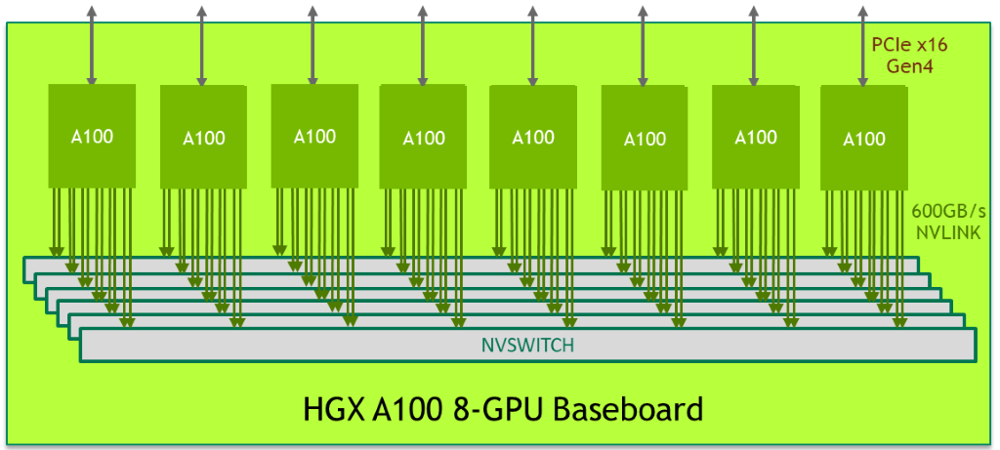
This config can be viewed with nvidia-smi nvlink --status -i 0, which displays all NVLinks for the GPU with the id specified by -i.
This config enables direct DtoD communication between any pair of devices, which significantly reduces the AllReduce latencies. Due to this comms parallelism, scaling from two to four devices still results in a significant speed-up. Even going up to eight devices still accelerates training, although the gains slowly become marginal as individual kernel latencies start approaching single-digit µs durations (at which point these durations are of the same order as networking latency) and the AllReduce kernels become largely non-overlapped with compute.
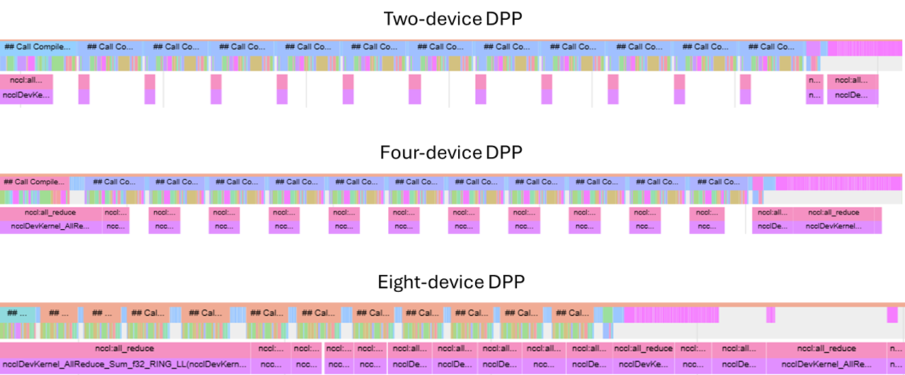
While I have kept the overall batch size at a level where I expected to see this behaviour while working on an 8×A100 GPU box, and in practice training batches would be significantly larger, this is still symptomatic of the kinds of limitations present in real training runs. Once the batch is sharded to a point where the amount of work is not sufficient to mask the AllReduce ops, gains from further device count scaling may become marginal (or even reversed) as the collective op latency becomes dominant.
Sanity Checks
So far, we have been looking at trends: do collective ops get faster with increased bandwidth; does compute time reduce as work is shared between more GPUs. But before moving on, let us be more quantitative with respect to the numbers we are seeing. We know the maximum bandwidth numbers for individual configurations — but is our training loop anywhere near those numbers? How far can we push our hardware?
There is some overhead associated with launching and routing collective ops, so for the purpose of comparison it is best to marginalise these by increasing bucket size; we saw that 100MB is a sensible value for bucket size, so we will use these instead of the default 25MB.
Testing on two different GPU boxes, each supposedly identically networked in terms of NVLink count (12 per device) and generation (3.0) and the NVSwitch generation (2.0), we get different numbers for AllReducing a 100MB bucket: 1250µs and 800µs for the 40GB SKU and 80GB SKU, respectively. For 100MB buckets, this implies around 80 GB/s and 120 GB/s, respectively — neither anywhere close to the theoretical maximum of 300 GB/s. What gives?
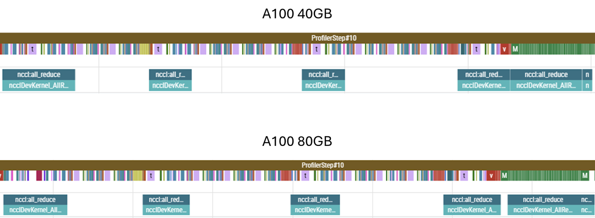
First, let us consider the differences between the boxes themselves. At face value, only the HBM capacity and HBM bandwidth is different — and neither of those two parameters should matter; HBM bandwidth is orders of magnitude larger than the transfer speeds in question, so writing to/from HBM is not the limiting factor here. Since the count and generation of the NVLinks is identical, the only remaining difference is the NVSwitch. While this reports as being the same generation as well, the NVSwitch silicon varies in-generation, whereas, as far as I am aware, there are no in-generation differences between NVLink interconnects. This example shows that all components of the network must be considered when optimising throughput — the system is only as fast as the slowest link in the chain.
As for the absolute shortfall with respect to the theoretical maximum, this is a combination of two factors. Firstly, AllReduces observed in training suffer from contention with other operations taking place on-chip. We can see this is the case by once again resorting to all_reduce_perf. By performing the op in isolation, the same 100MB AllReduce reports 100 GB/s and 180 GB/s for the two GPU boxes.
Secondly, the 100MB bucket size is still relatively small; for bucket sizes of the order of 1GB and more, we get 130 GB/s and 205 GB/s, respectively.
Finally, AllReduces themselves require some computation — such as summing the local and arriving shards — and therefore are reliant on SM slots being available. The computations are not particularly heavy-weight, but they do add some scheduling contention and latency. To expose this difference, let us construct a bandwidth test that does not require any computation:
import torch
import time
a = torch.ones(1024*1024*1024, dtype=torch.float32, device='cuda:0')
b = torch.empty(1024*1024*1024, dtype=torch.float32, device='cuda:1')
# warm up
for _ in range(5):
b.copy_(a)
torch.cuda.synchronize()
N = 100
start = time.perf_counter()
for _ in range(N):
b.copy_(a)
torch.cuda.synchronize()This test reports 180 GB/s and 280 GB/s. For the more recent box, we nearly saturate the NVLink bandwidth; this suggests that the other box, networked with identical interconnects, must indeed be limited by a slower NVSwitch internal bandwidth.
So, what kind of speed-up can we get from going from a single GPU up to eight? Well, since almost all of the AllReduces are overlapped with compute, unsurprisingly we get a near-linear speed-up with the number of devices.
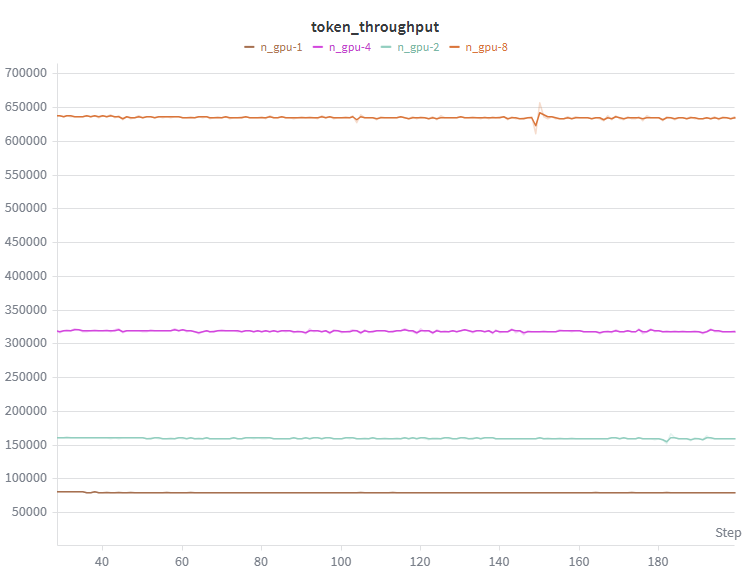
FSDP
In DDP, we feed identical replicas of the model different partitions of the training data, and synchronise the resulting gradients. For very large models, the model itself (alongside the associated gradients and optimiser states) can take up a significant proportion of the on-chip memory. Replicating all this on each chip can leave little room for data, and since the size of the gradients which need to be AllReduced is fixed, this can lead to the ratio of compute to data transfer being insufficient to overlap the transfers and, consequently, the system being memory bandwidth rather than compute limited.
To avoid this, we can distribute the model itself between GPUs. At any given point, each GPU only holds a fraction of the model’s weights, and when a particular chip requires the entire weights matrix to carry out a computation, chips communicate via the networking hardware to gather all the shards onto the chip in question. If the bandwidth is sufficient, this AllGather operation will be performed ahead of time, so that a continuous compute pipeline is maintained.
Also, since each GPU only holds a smaller proportion of weights instead of a full replica, only the gradients corresponding to the local weights are needed to perform the optimizer step, so there is no need to AllReduce the entire gradient — a ReduceScatter operation, which reduces and materialises just the gradients corresponding to the local shard of model parameters, is performed instead.
In our case, however, the model itself only occupies a small fraction of the memory. We have ample space to fit a batch size large enough to mask any AllReduce computations. And while it is true that the final AllReduce cannot be overlapped with compute, and that in FSDP this AllReduce is replaced with a smaller ReduceScatter, FSDP also has to perform a separate operation that cannot (or at least not easily) be overlapped with compute: the initial AllGather of the first layer in the forward pass. All in all, in our case the difference is marginal.
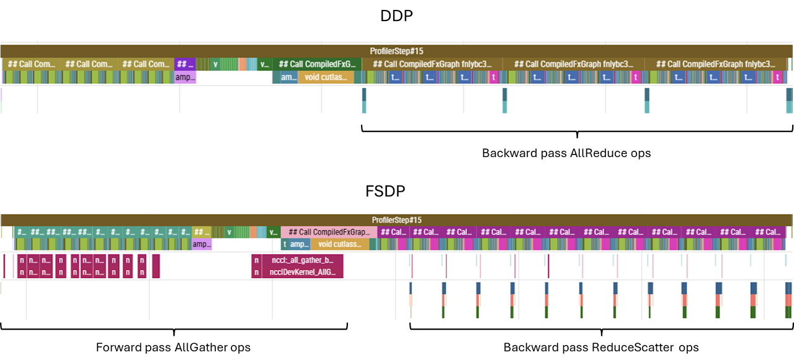
For completeness, here are some notes regarding FSDP:
- We must specify how to shard the model; a sensible choice is to shard every layer, meaning with \(N\) devices each device holds \(\frac{1}{N}\)th of each layer, and during the computation of layer \(l\) the weights corresponding to layer \(l+1\) are being gathered. This means that at any given time only approximately \(\frac{2}{L} \times \text{model\_size}\) is materialised on each GPU. If we do not specify the sharding strategy, PyTorch will fall back to sharding the entire model, meaning that the entire model will be gathered at the start of the forward pass, entirely defeating the purpose of applying FSDP. Sharding can be specified via the wrapping policy:
auto_wrap_policy = partial(
transformer_auto_wrap_policy, transformer_layer_cls={TransformerBlock}
)
distributed_model = FSDP(model, auto_wrap_policy=auto_wrap_policy, use_orig_params=True)- Some operations used in the process of sharding/unsharding the model introduce graph breaks, so in order to
torch.compilethe sharded model we have to allow graph breaks by settingfull_graph=False. - FSDP has a settable mixed precision policy, settable via the
mixed_precisionargument during initialisation. This defaults to fp32, so some care is advisable when using autocast. FSDP and autocast are perfectly compatible, but, particularly if working in lower precision, it is worth checking that we are not casting dtypes back and forth for no good reason.
Gradient Checkpointing
By default, activations generated during the forward pass are cached for later use in the backward pass. While this does save compute — as otherwise those activations would have to be recomputed — the memory footprint of storing activations is significant. In fact, without any treatment, this footprint can get so large that it dwarfs every other memory allocation. To see this, let us carry out a quick back-of-the-envelope estimation of different memory requirements.
| Component | Footprint |
|---|---|
| Model weights (120M × bf16) | ~240 MB |
| Gradients (one per parameter) | ~240 MB |
| Optimiser states (two momentum params per parameter) | ~480 MB |
| Total (model + gradients + optimiser) | ~960 MB |
And yet, when we attempt to run with a batch size of 512 and context length of 1024 (which, with DDP over 8 GPUs, gives a per-chip batch size of 64), we hit out-of-memory errors on an 80GB device.
In transformer layers, we have some fairly large matrix multiplication ops:
| Layer | Activation Shape | Size (bf16) |
|---|---|---|
| Attention Wqkv projection | (64, 1024, 768×3) | ~300 MB |
| Feed-forward Wup projection | (64, 1024, 3072) | ~400 MB |
| Vocab projection | (64, 1024, 50256) | ~6.6 GB |
The attention and feed-forward activations scale with the number of layers (12 in our case), and even looking at just some of the larger activation tensors, we see that the required memory quickly grows to fill and exceed the chip’s memory.
Instead of saving all the activations, we can choose to not save anything at all and recompute, or to save some but not all activations. Recomputation will of course generate additional overhead compared to a fully cached training run; however, since the amount of memory required in fully cached runs is so asymmetrically higher, by reducing the amount of caching we may be able to fit a much larger batch on the chip, and thus increase token throughput overall. The caveat is that a larger batch size is not always what we want, and we should think carefully whether this increased throughput is what we really care about. For now, we are only seeking to maximise throughput.
For simplicity, it is common to checkpoint model per-layer. We can achieve this with:
if args.checkpoint_grads:
non_reentrant_wrapper = partial(
checkpoint_wrapper,
checkpoint_impl=CheckpointImpl.NO_REENTRANT,
)
check_fn = lambda layer: isinstance(layer, TransformerBlock)
apply_activation_checkpointing(
distributed_model,
non_reentrant_wrapper,
check_fn,
)This traverses the model and applies checkpointing to any nn.Module instance picked up by check_fn.
A more optimised treatment would be to cache operations that are expensive to compute but produce relatively small activations, and recompute otherwise. For example, in the feed-forward layer, the up- and down-projection require the same amount of computation, but the up projection produces activations that are four times larger than the down-projection. Similarly, the un-embedding produces an enormous matrix owing to the vocab_size — it may be worth experimenting with not caching those activations.
To be more selective about how we checkpoint, we can either perform some logic inside check_fn to verify the FLOPs/footprint of the individual module, or we can wrap layers we wish to checkpoint inside custom classes. For example, if we wish to checkpoint the vocab projection op:
class LayerWrapper(nn.Module):
def __init__(self, d_attention, vocab_size):
super().__init__()
self.large_projection = nn.Linear(d_attention, vocab_size)
def forward(self, x):
x = self.large_projection(x)
return x
# Modify the lambda to also checkpoint LayerWrapper
check_fn = lambda layer: isinstance(layer, (TransformerBlock, LayerWrapper))For our model specifically though, even without checkpointing, we can fit a large enough batch to saturate kernels; fitting an ever larger batch not only does not help (as the operations are pipelined in sequential order), it actually hurts throughput due to re-computation. For completeness, below is an example of running with and without checkpointing and its effect on memory allocation and throughput.
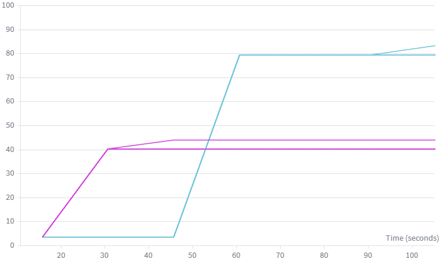
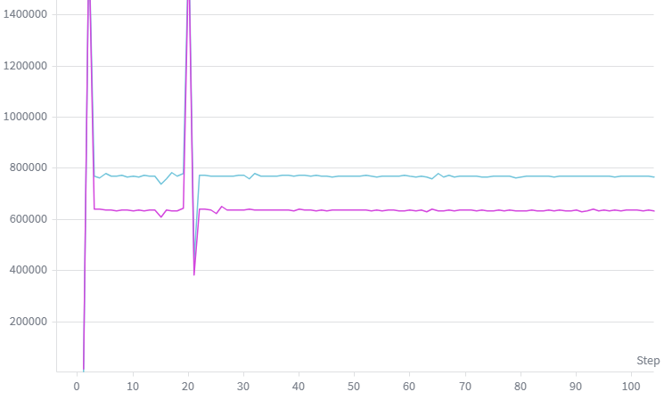
Tensor Parallelism
While FSDP and gradient checkpointing were not helpful in our situation, there is another technique which will reduce the activation memory pressure without the need to recompute activations.
While FSDP shards the contracting dimension of the weight tensors of our model, tensor parallelism shards the non-contracting dimension. The immediate effect of this is that the size of the activations is reduced, allowing us to fit a larger local batch.